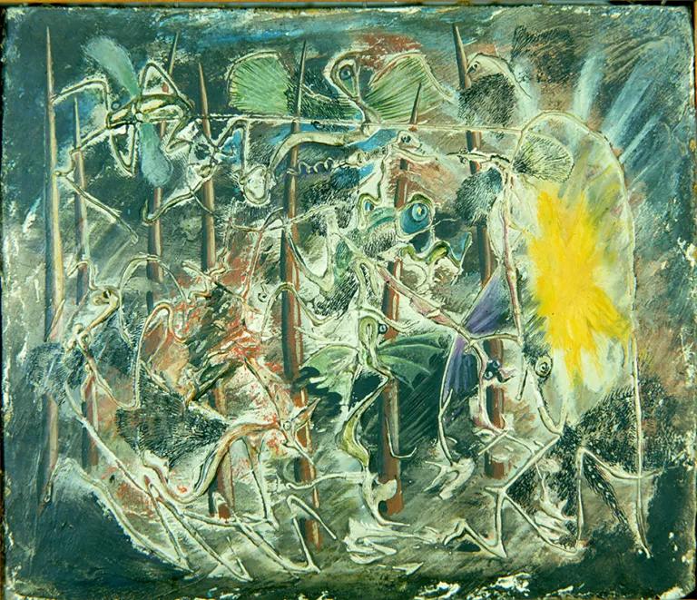
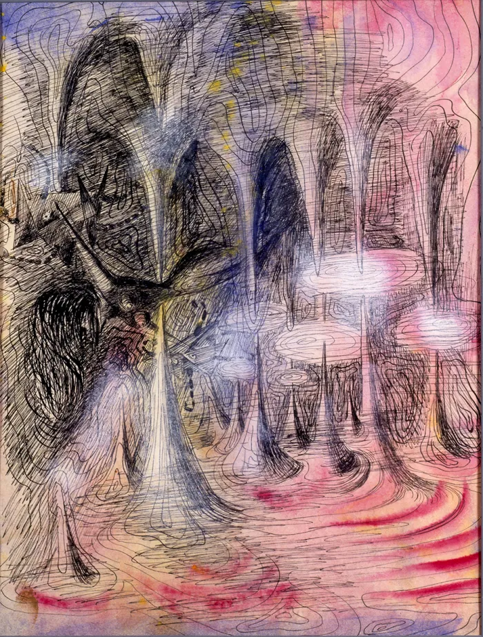

Obras
1940-1950

LE MARÉCHAL PÉTAIN, 1941
Le Dernier Romantique a été Enculé par le Maréchal Pétain, 1941

FESTIVAL DE MOSQUITOS, 1942
Festival de Mosquitos, 1942 óleo y Cera/Cartón.
Festival de Mosquitos, 1942 óleo y Cera/Cartón.

GRUTA MÁGICA I, 1942
Gruta Mágica I, 1942 Mixta/Cartulina
Gruta Mágica I, 1942 Mixta/Cartulina
Gruta Mágica II (Deseo II), 1942 Tinta y Gouache/Papel.
Gruta Mágica III, 1942 Mixta/Cartulina.
Gruta Mágica IV, 1942 Tinta/Papel.

Hibernación, 1942 Óleo/tela.
Gato-Hombre 1943 Aguatinta, Sepia/papel.
Los Alacranes, 1943. Óleo/Tela.
Paisaje Torre Centauro (Torre Centauro) (La Torre),
1943 Mixta/Papel.
Pájaro Humano, 1943 Lápiz/Papel.
Retrato de Esteban Francés, 1943 Lápiz/Papel
Transmisión Ciclista con Cristales,
1943 Gouache/Cartulina.
El Zorro y La Ley, 1943 Lápiz/Papel
Primavera (Printemps), 1943-1944 Gouache/Papel.
Verano (Été), 1943-1944 Gouache/Papel

Otoño, 1943-1944 Gouache/Papel
Invierno, 1943-1944 Goauche/Papel
Perfil de Mujer con Sombrero Art Noveau,
1944 Tinta/Papel
Ruedas Metafísicas (Bicicletas en Café), 1944 Gouache/Cartulina
Funambulistas 1944 Tinta/Papel
Funambulistas,1944 Lápiz/Papel Mantequilla

Funambulistas (La Funambulista),1944 Temple/Masonite
A mi Amigo Agustín Lazo, 1945 Gouache/Papel
Personaje Felino, 1945. Mixta/Papel
Icono, 1945. Óleo y nácar incrustado/madera
Personaje Pájaro, 1945. Pluma y Tinta sepia/papel

Vida Extraña, 1945. Gouache/papel
Insomnio II (Insomnio), 1947. Gouache/Cartulina
Amibiasis (Los Vegetales) (Tifoidea, Paratifoide), 1947. Gouache/cartulina
Tiforal, 1947. Gouache/Cartulina
Angustia (Pesadilla), 1947. Gouache/Cartulina

El Hombre de la Guadaña
(Muerte en el Mercado) (Tifoidea),
1947. Gouache/Cartulina
Paludismo (Libélula), 1947.
Gouache/Cartulina
Laboratorio, 1947. Gouache/Cartón
Gitanay Arlequín, 1947. Gouache/Cartulina
Vigor, 1947. Gouache/Cartulina
Cara con Cabellera de Liquen, 1947.
Pluma y Aguada Magenta/Papel
La Batalla, 1947. Gouache/Cartulina
La Torre, 1947 Gouache/Papel
Dolor Reumático I (Dolor Reumático), 1948. Gouache/Cartulina
Dolor Reumático II (Reuma, Lumbago, Ciática) , 1948. Gouache/Cartulina
Caja (Interior), 1948. Óleo, Oro de Hoja, Metal y Espejo La "N" y "H"
que se aprecian en el interior de las puertas hacen referencia
a Norah Horna y originalmente tenían un cordón de seda.
Caja (Painted Box) (Caja Pintada), 1948 Óleo, Oro de Hoja,
Metal y Espejo La "N" y "H" que se aprecian en el interior
de las puertas hacen referencia a Norah Horna y originalmente tenían un cordón de seda.
Caja de Jean Nicolle (Exterior), 1948.
Óleo, Metal y espejo Incrustado/Madera
Caja de Jean Nicolle (Interior), 1948.
Óleo, Metal y espejo Incrustado/Madera
Dolor, 1948 Gouache/Cartulina
Cambio de Tiempo, 1948. Gouache/Cartulina
Frío (Invierno), 1948. Gouache/Cartulina
Alegoría de Invierno (Invierno), 1948. Guache/Papel

Vejez, 1948. Gouache/Papel
La Torre, 1948.
Gouache/Papel Esta obra es un trabajo comercial,
solicitado por la Compañia Abastecedora de Impresos,
S.A. de México.

Piloto Explorador, 1948 Lapíz /Papel

Jean Nicolle, 1948. Óleo/Madera
Puntos y Rayas, 1949. Tinta/Papel

Disttorción Cristalina, 1949. Tinta China y Pluma/Cartulina
Dos personajes, 1949. Lapíz/Papel